El origen de la fiesta

La Fiesta Medieval de Castro Marim surgió en 1998 como una iniciativa del municipio para recuperar y valorizar el pasado histórico de la villa, aprovechando el imponente Castillo de Castro Marim y su casco antiguo como escenarios auténticos de la Edad Media. El objetivo fundacional fue divulgar el patrimonio local, recrear la vida medieval con rigor histórico, dinamizar la artesanía y dar un nuevo impulso turístico y cultural a la región, integrando oficios tradicionales, comercio antiguo y ambientación histórica en un evento anual que pronto se convirtió en parte esencial de la identidad local.
La Transformación
Con el paso de los años, lo que comenzó como una festividad local evolucionó hacia una de las recreaciones históricas más importantes del sur de Europa, creciendo en número de visitantes, artesanos, actuaciones y participación artística. La fiesta ha incorporado nuevas propuestas como banquetes medievales, espectáculos especializados, actividades familiares, talleres y exposiciones temáticas en el castillo, ampliando su alcance y complejidad. Esta evolución ha permitido que el evento pase de ser una simple recreación a convertirse en una experiencia medieval inmersiva y multidimensional que atrae cada vez a más público.
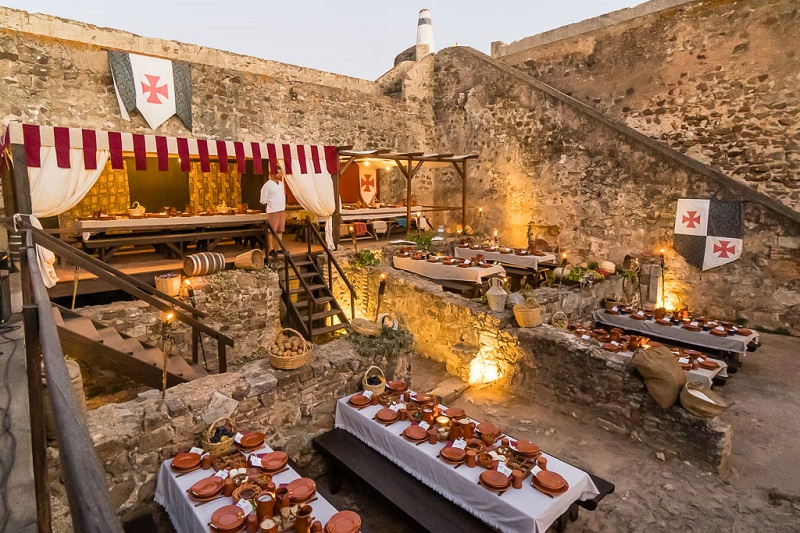Las tradiciones
Durante los días del festival, Castro Marim se transforma en una auténtica villa medieval donde habitantes y visitantes adoptan los roles de la época, desde reyes y caballeros hasta artesanos y campesinos. Se recrean oficios tradicionales —como herreros, curtidores o artesanos del cuero— con demostraciones en vivo que muestran cómo era el trabajo manual en la Edad Media, y las calles se llenan de música, teatro, artesanía y sabores propios de un mercado medieval. Los banquetes nocturnos y las cenas ritualizadas evocan la vida cortesana y popular, ofreciendo experiencias sensoriales que recuperan antiguas costumbres y formas de convivencia.
Los espectáculos
La fiesta ofrece una amplia variedad de espectáculos que van desde torneos y combates medievales —a pie y a caballo— hasta desfiles históricos, teatro callejero, música antigua, malabaristas, tragafuegos, cetrería y actividades interactivas para familias. También acoge talleres y juegos infantiles, elaboraciones de escudos y demostraciones artísticas que envuelven a los visitantes en un ambiente medieval completo. Los grandes desfiles inaugural y final recorren la villa con cientos de figurantes, mientras que el castillo acoge exposiciones temáticas que recrean aspectos más desconocidos de la época.
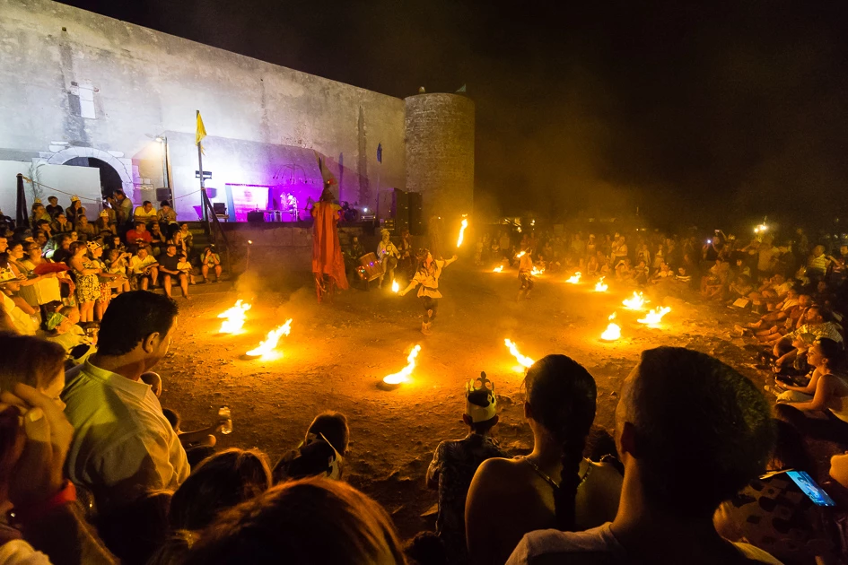El mercado medieval
El mercado medieval constituye el corazón de la fiesta, donde artesanos y comerciantes de diversas regiones ofrecen productos inspirados en la época, desde objetos de cuero y metal hasta alimentos tradicionales y artesanía exclusiva. No se trata solo de una feria turística: su organización reproduce el dinamismo comercial propio del medievo, integrando oficios, trueques, demostraciones y ambientación histórica. El mercado se combina con espectáculos y actividades que hacen que toda la villa funcione como un auténtico centro comercial medieval lleno de música, colores y vida.
El impacto
El impacto de la fiesta en Castro Marim es notable tanto cultural como económicamente, ya que ha permitido poner en valor el patrimonio histórico del municipio, atraer miles de visitantes y fortalecer sectores como la restauración, la artesanía y el comercio local. Socialmente, el festival ha potenciado el orgullo de pertenencia, reforzando la identidad comunitaria y dando visibilidad a tradiciones que antes estaban en riesgo de desaparecer. También ha contribuido a la preservación de oficios tradicionales y al mantenimiento del patrimonio intangible, además de posicionar a Castro Marim como referente en recreaciones históricas.
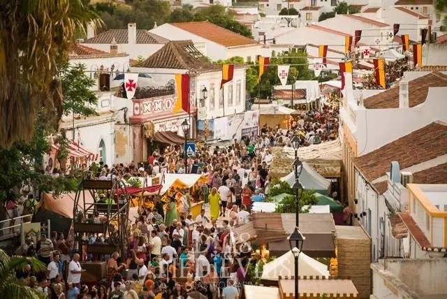Participación Internacional
El carácter internacional del festival ha crecido con cada edición, incorporando grupos de música, danza, teatro y recreación histórica procedentes de Portugal, España, Francia, Italia y otros países europeos. Además, la colaboración con ciudades hermanadas y municipios extranjeros ha enriquecido la calidad del evento, aportando diversidad cultural y mayor autenticidad en las representaciones. Esta dimensión internacional ha convertido la fiesta en un punto de encuentro europeo para gremios medievalistas, artesanos y visitantes aficionados a la historia.
La Importancia Turística y Cultural
La Fiesta Medieval de Castro Marim se ha consolidado como uno de los eventos culturales más importantes del Algarve, estimulando el turismo durante la temporada estival y atrayendo a un público interesado en la historia, el patrimonio y las experiencias inmersivas. Ha incrementado la visibilidad del municipio en ferias internacionales de turismo y ha reforzado la oferta cultural del territorio, convirtiéndose en una herramienta fundamental para la preservación de la memoria colectiva, la difusión del patrimonio arquitectónico y la valorización de la artesanía y las tradiciones locales.

Recopilación de Imágenes
 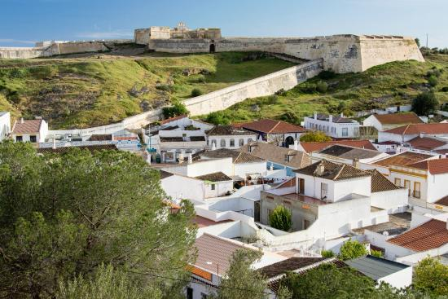
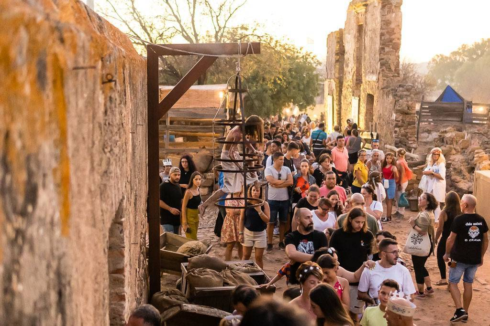
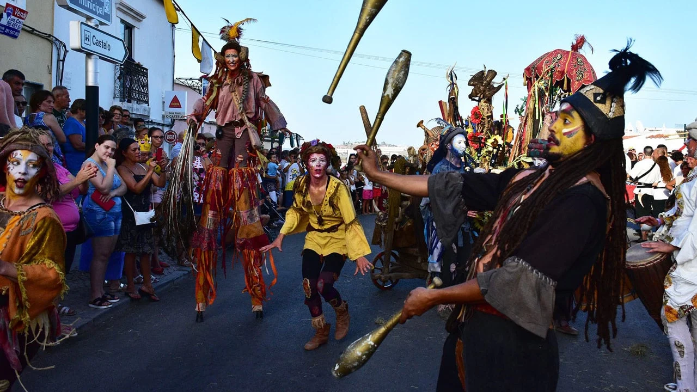
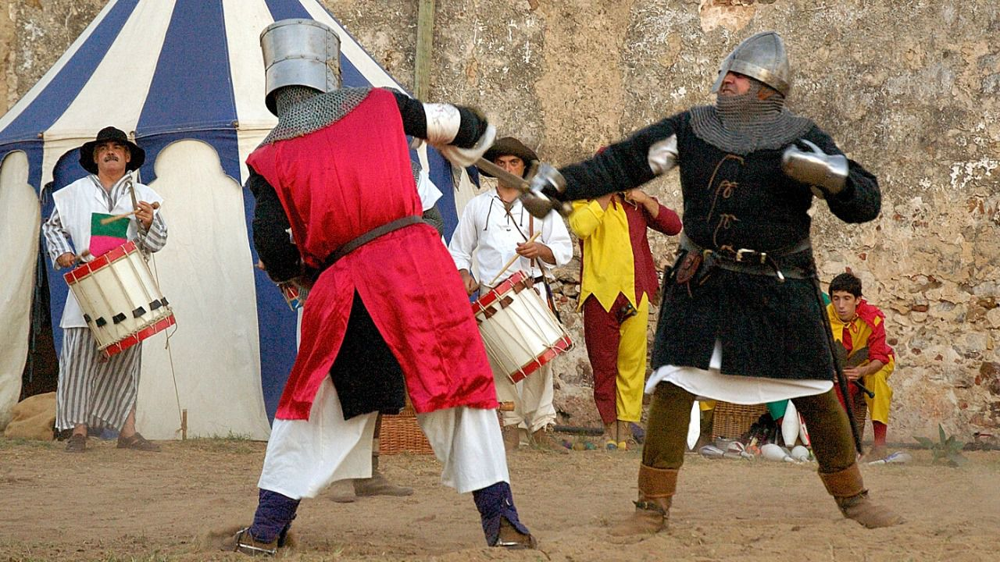
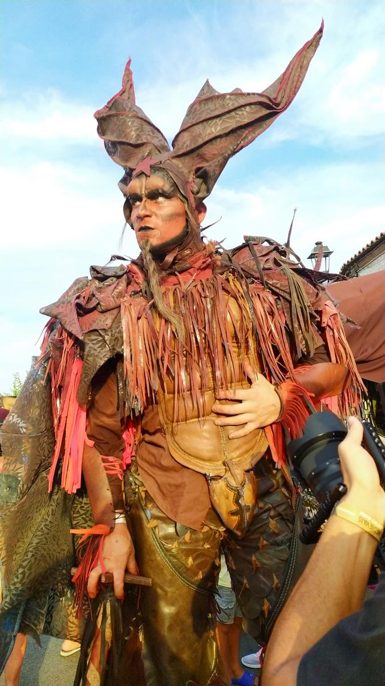
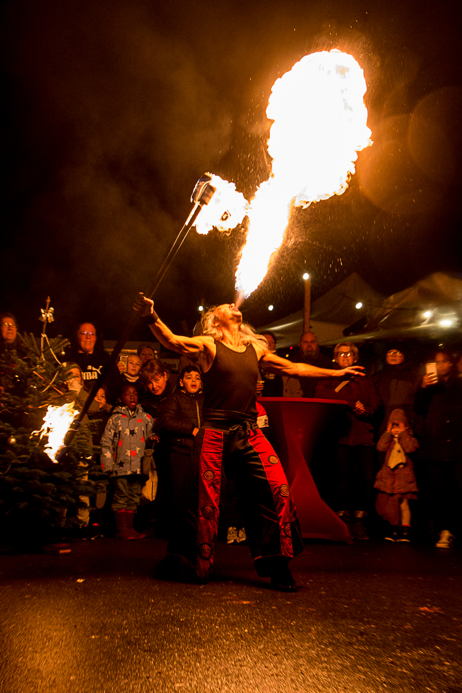
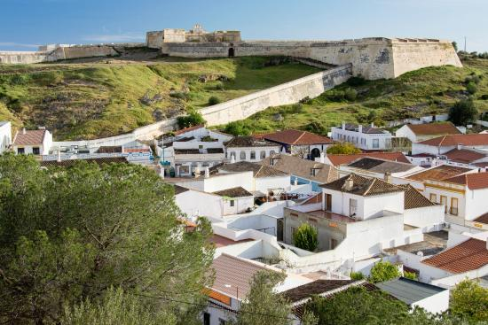
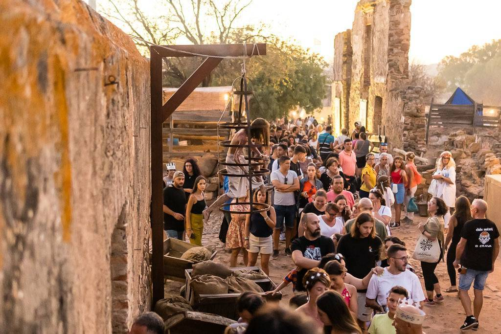
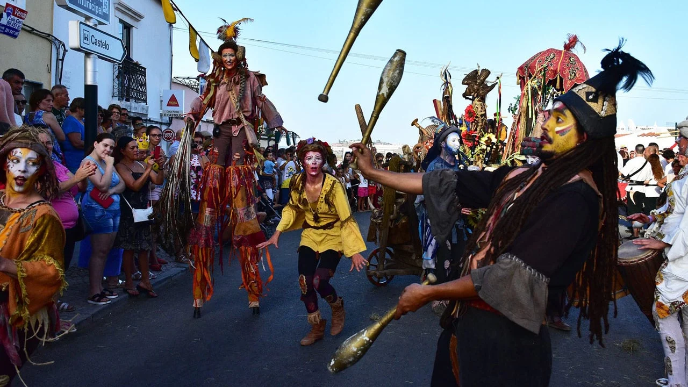
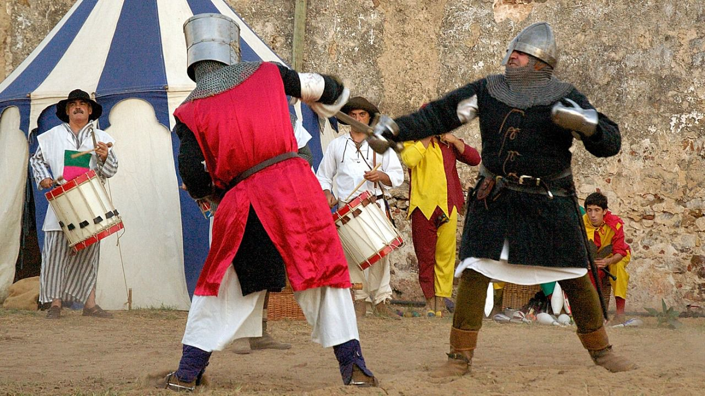
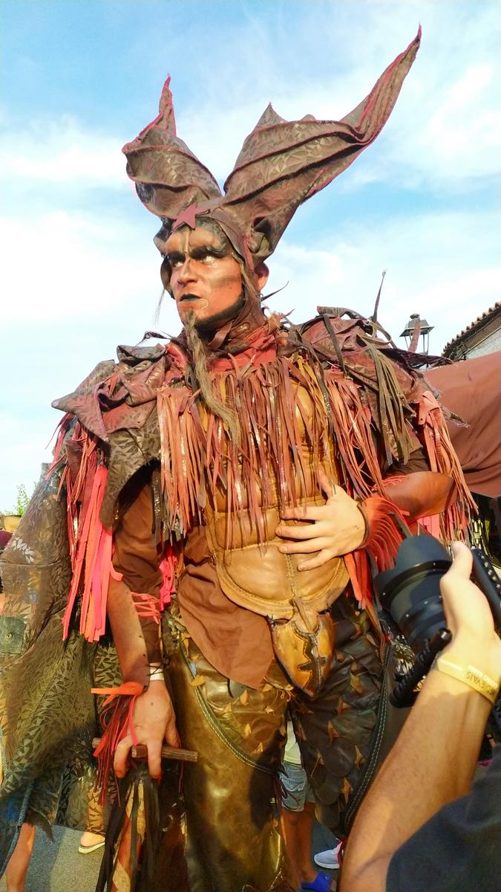
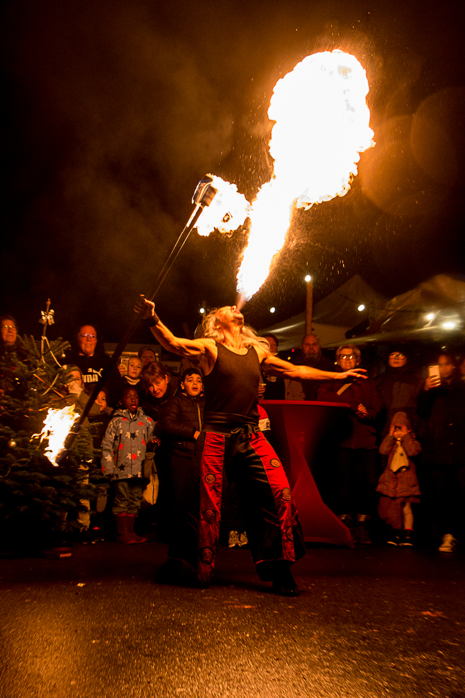